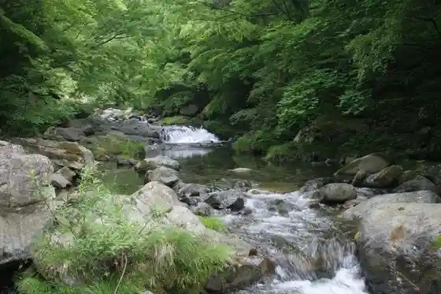
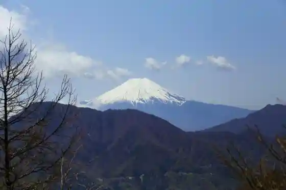
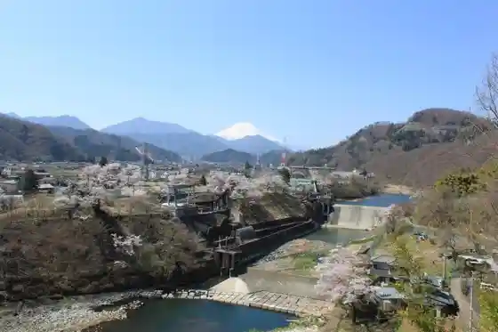

Shika Ryu Oto Campground
Tsuru, Yamanashi · Official / source link
Shika Ryu Gorge
Tsuru, Yamanashi · 0554-43-1111 · Official / source link

Ima Kurayama
Tsuru, Yamanashi · 0554-43-1111 · Official / source link

Kawa Shigeru Entei Cherry Blossoms
Tsuru, Yamanashi · 0554-43-1111 · Official / source link

San Park Tsuru
Tsuru, Yamanashi · Official / source link
Toka Market Natsu Kari Yusui Gun
Tsuru, Yamanashi · 0554-43-1111 · Official / source link
Tahara Falls
Tsuru, Yamanashi · 0554-43-1111 · Official / source link
Taro Jiro Taki
Tsuru, Yamanashi · 0554-43-1111 · Official / source link
Nagomi no Sato Tanenori Kan
Tsuru, Yamanashi · 0554-46-0753 · Official / source link
Hokyo Tera
Tsuru, Yamanashi · 0554-43-4459 · Official / source link
Yamanashi Prefectural Rinia Kengaku Center
Tsuru, Yamanashi · 0554-45-8121 · Official / source link
Kuki Yama
Tsuru, Yamanashi · 0554-43-1111 · Official / source link
Soryu Kyo
Tsuru, Yamanashi · 0554-43-1111 · Official / source link
Miyako no Mori Uguisu Horu
Tsuru, Yamanashi · 0554-43-1515 · Official / source link
Entsu In
Tsuru, Yamanashi · 0554-43-2504 · Official / source link
Shika Ryu Hatsudensho Cherry Blossoms
Tsuru, Yamanashi · 0554-43-1111 · Official / source link
Rakuzan Park
Tsuru, Yamanashi · 0554-43-1111 · Official / source link
Katsuyama Castle Ruins (Shiroyama Park)
Tsuru, Yamanashi · 0554-43-1111 · Official / source link
Keirin Tera no Suiren
Tsuru, Yamanashi · 0554-43-3270 · Official / source link
Museum Tsuru
Tsuru, Yamanashi · 0554-45-8008 · Official / source link
Takara no Yama Fureai Village
Tsuru, Yamanashi · 0554-45-6222 · Official / source link